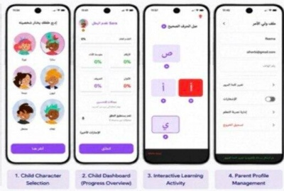
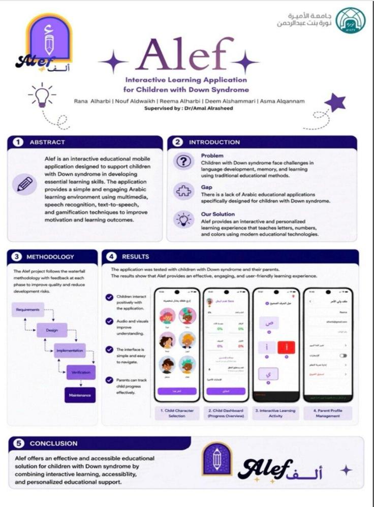

Alef ألف
A collaborative educational application for children aged 4–8 with Down syndrome.
Status: Completed university capstone project
Overview and need
Alef supports learning through interactive activities, designed around accessibility and ease of use for young children.
Features
- Letters
- Numbers
- Colors
- Matching
- Voice practice
- Drawing and tracing
Technologies and tools
FlutterFirebase AuthenticationCloud FirestoreFirebase StorageFigmaSpeech recognitionText-to-speech
My role
Alef was a team capstone. The work was divided among team members, and I contributed across the project's components as assigned work was completed. The team worked on the application, its interface and its supporting services.
Project Poster


More projects
Forsah فرصة · Alef ألف · Solven سولفن · Why Am I Waiting? ليش أنا أنتظر؟